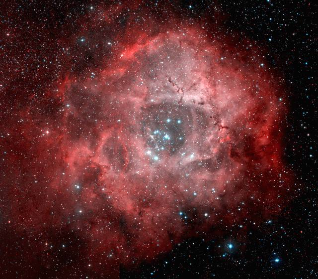
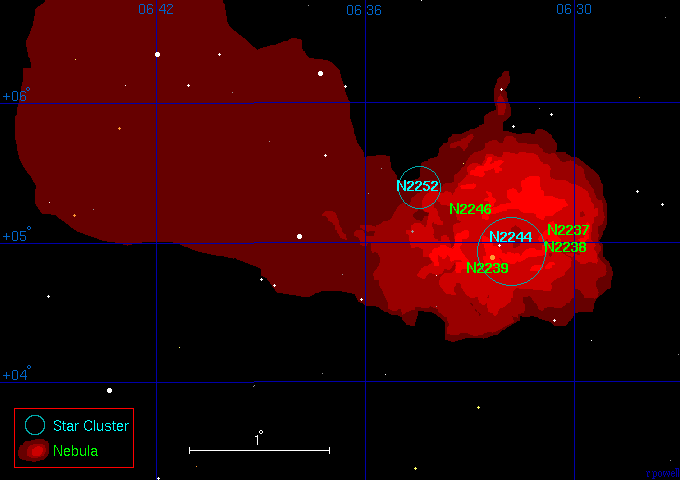
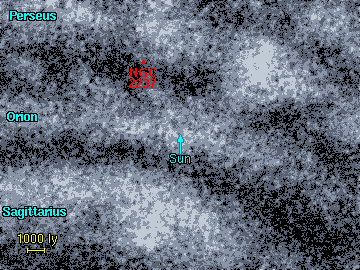
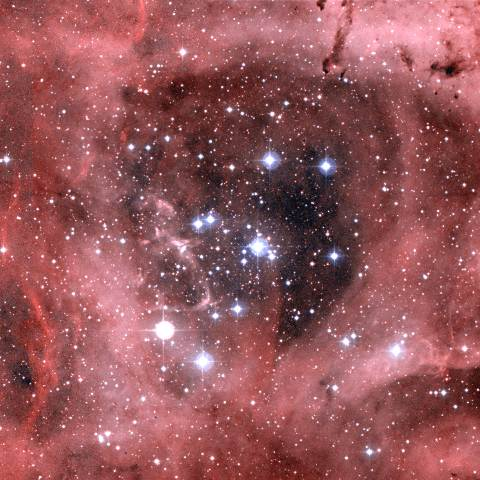
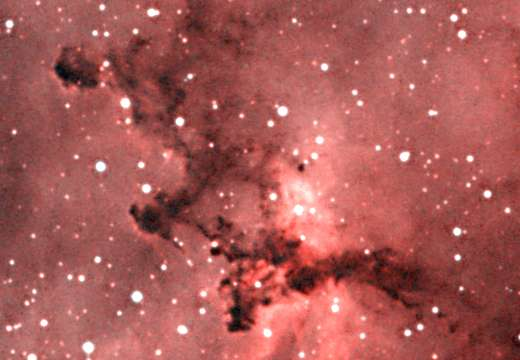

سديم روزيتا - NGC 2237, 2238, 2239, 2246
و هو سديم ليس لامع بالقدر الكافي لرؤيته بالعين المجردة. لكن شهرته جاءت بشكل أساسي من الشكل الدائري الذي يشبه الوردة. يتواجد سديم روزيتا في ذراع برشاوس المجري و يوجد فيه عنقود نجمي فتي متوضع في مركزه.

سديم روزيتا. Image size: 1.8°x1.6°. DSS image. © CalTech/Palomar
السدم المرتبطة بسديم روزيتا
من مصنف NGC يوجد أربعة من السدم تنتشر في فضاء السديم. و من الصعوبة معرفة الأجزاء التي تمثلها بدقة هذه السدم من سديم روزيتا. تم اكتشافها جميعا بشكل بصري في القرنين الثامن عشر و التاسع عشرقبل أن يدرك العلماء وجود سديم واحد هنا. فالجزء المسمى NGC 2239, على سبيل المثال يمثل الجزء الذي يحيط بالنجم
12 Monocerotis. يذكر بأن الأحجام المذكورة في هذا الجدول تمثل الحجم الكلي و ليس أحجام الأجزاء المنفردة.
1 2 3 4 5 6 7 8
Catalogue Equatorial Galactic Size Type Distance Size Other Names
Number Coordinates Coordinates (arcmins) (ly) (ly)
RA (2000) Dec l° b°
--------------------------------------------------------------------------------------
NGC 2237 06 30.9 +05 03 206.1 -2.3 90' E 4700 125 Rosette nebula
NGC 2238 06 30.7 +05 01 206.1 -2.3 90' E 4700 125 Rosette nebula
NGC 2239 06 31.9 +04 57 206.3 -2.1 90' E 4700 125 Rosette nebula
NGC 2246 06 32.6 +05 08 206.2 -1.8 90' E 4700 125 Rosette nebula
|
العمود 1: إسم السديم النظامي في المصنف.
العمود 2: إحداثيات المطلع المستقيم و الميل - حولية فلكية للعام 2000.
العمود 3: إحداثيات الطول (l) و العرض (b) المجريين.
العمود 4: الحجم الزاوي للسديم بالدقيقة القوسية.
العمود 5: نوع السديم E = إصداري, R = إنعكاسي.
العمود 6: المسافة التقريبية إلى السديم مقدرة بالسنة الضوئية.
العمود 7: الحجم التقريبي للسديم مقدرا بالسنة الضوئية.
العمود 8: الاسم البديل للسديم.
|
العناقيد النجمية المرتبطة بسديم روزيتا
العنقود الوحيد المؤكد ارتباطه بهذا السديم هو
NGC 2244 الذي يتواجد في مركز السديم، والذي تم اكتشافه من قبل ويليام هرشل William Herschel
عام
1784. العنقود النجمي NGC 2186 هو أيضا في اللائحة لأنه لا يبعد سوى 5 درجات قوسية بما يعادل (400 سنة ضوئية
) عن سديم روزيتا.
و هما على مسافة واحدة بالنسبة إلينا.
يقع NGC 2252 شمال شرق سديم روزيتا و يعتقد بأنه جزءمن سديم روزيتا و لكن بعده غير معروف.
1 2 3 4 5 6 7
Catalogue Equatorial Galactic Size Distance Age Other Names
Name Coordinates Coordinates (arcmins) (ly) (million
RA (2000) Dec l° b° years)
-------------------------------------------------------------------------------
NGC 2186 06 12.2 +05 28 203.6 -6.2 5' 4700 55
NGC 2244 06 32.0 +04 57 206.3 -2.1 29' 4700 8
NGC 2252 06 34.8 +05 22 206.2 -1.3 18' ? ?
|
العمود 1: إسم العنقود النجمي النظامي في المصنف.
العمود 2: إحداثيات المطلع المستقيم و الميل - حولية فلكية للعام 2000.
العمود 3: إحداثيات الطول (l) و العرض (b) المجريين.
العمود 4: الحجم الزاوي للعنقود النجمي مقدرا بالدقيقة القوسية.
العمود 5: المسافة إلى العنقود النجمي مقدرة بالسنة الضوئية.
العمود 6: العمر التقريبي للعنقود النجمي مقدرا بملايين السنوات.
العمود 7: الاسم البديل للعنقود النجمي.
|
References:
Dias W, Alessi B, Moitinho A, Lepine J, (2002). New catalogue of
optically visible open clusters and candidates. Astron and Astrophys, 389, 871.
|
خريطة سديم روزيتا
أدناه خريطة لسديم روزيتا، و الأجزاء الرئيسية منه تم تسميتها و هناك موضعين لعنقودين نجميين رئيسيين تم وضع علامات تحددها. لاحظ بأن سديم روزيتا يقع في نهاية سديم إصداري مجاور ممتد على مسافة 3 درجات قوسية في السماء.

موضع سديم روزيتا
|

|
المسافة إلى سديم روزيتا معروفة بشكل جيد لوجود عنقود نجمي يقع في مركز السديم مما يجعل تقدير المسافة إليه أكثر سهولة. يقع السديم على بعد 4700 سنة ضوئية ضمن الحافة القريبة لذراع برشاوس المجري.
|
العنقود النجمي NGC 2244NGC 2244 عنقود نجمي يقع في مركز سديم روزيتا، و هو عنقود نجمي فتي و لامع و هو المسؤول عن إحداث الفجوة المرئية في السديم فالرياح النجمية العالية الطاقة من نجوم العنقود تسببت بجرف الغاز من حولها بعيدا، هذه الصورة هي تقريبا بقطر 40 سنة ضوئية.
|

NGC 2244. Image size: 0.5°x0.5°. DSS image.
|

طبقات الغبار في سديم NGC 2237. Image size: 0.15°x0.10°. DSS image
|
طبقات الغبار في سديم روزيتا
صورة مقربة لجزء من سديم روزيتا يظهر فيها تجمعات هائلة من الغبار. و تمثل هذه الصورة تقريبا 10 سنوات ضوئية عرضا.
|